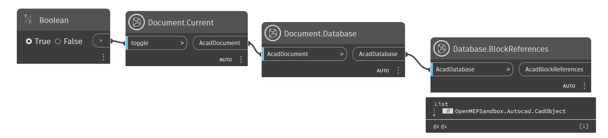
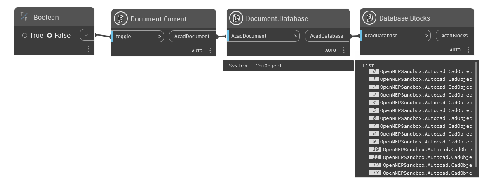
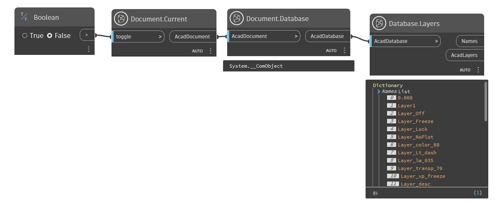
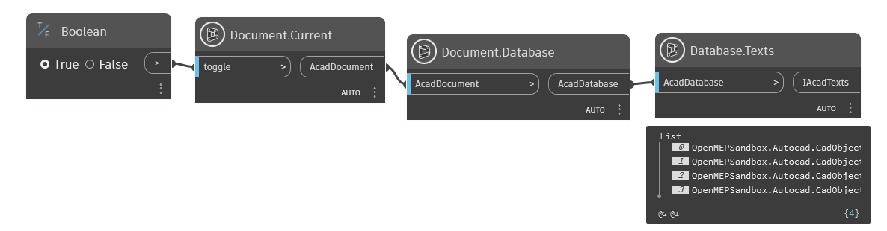

Class Database
- Namespace
- OpenMEPCad.Autocad
- Assembly
- OpenMEPCad.dll
The Database object contains all of the graphical and most of the non-graphical AutoCAD objects. Some of the objects contained in the database are entities, symbol tables, and named dictionaries. Entities in the database represent graphical objects within a drawing. Lines, circles, arcs, text, hatch, and polylines are examples of entities. A user can see an entity on the screen and can manipulate it.
public class Database- Inheritance
-
Database
- Inherited Members
Methods
BlockReferences(dynamic)
Get all blocks in database of Document
public static dynamic BlockReferences(dynamic AcadDatabase)Parameters
AcadDatabasedynamicAcadDatabase
Returns
- dynamic
AcadBlockReferences
Examples

Database.BlockReferences.dynBlocks(dynamic)
Get all blocks in database of Document
public static dynamic Blocks(dynamic AcadDatabase)Parameters
AcadDatabasedynamicAcadDatabase
Returns
- dynamic
AcadBlocks
Examples

Database.Blocks.dynLayers(dynamic)
Get all layers in database
[MultiReturn(new string[] { "Names", "AcadLayers" })]
public static Dictionary<string, object> Layers(dynamic AcadDatabase)Parameters
AcadDatabasedynamicAcadDatabase
Returns
Examples

Database.Layers.dynTexts(dynamic)
Get all texts in database of Document
public static dynamic Texts(dynamic AcadDatabase)Parameters
AcadDatabasedynamicAcadDatabase
Returns
- dynamic
AcadTexts
Examples

Database.Texts.dyn